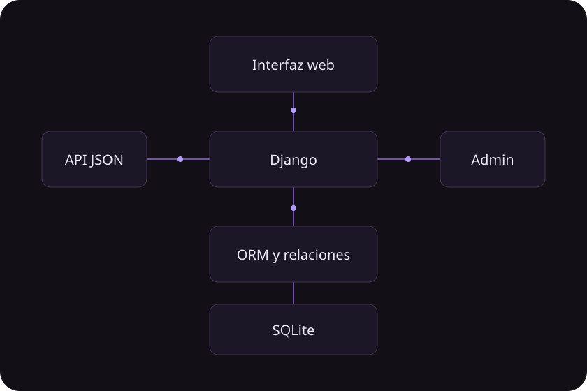

El problema
Organizar ofertas que pertenecen a sucursales y pueden clasificarse en varias categorías. El proyecto académico necesita presentar el catálogo, combinar filtros y administrar datos sin escribir cada tarjeta a mano.
La solución
Django renderiza el sitio y consulta modelos relacionados mediante su ORM. La API JSON expone el mismo catálogo en modo de solo lectura. Un explorador JavaScript muestra los resultados, la paginación y la respuesta JSON.

Decisiones que conviene explicar
- Relación de muchas ofertas a una sucursal y de muchas ofertas a muchas categorías.
- Precio desconocido como null, diferente de un precio cero.
- Filtros antes de paginar y consultas relacionadas que evitan consultar cada tarjeta por separado.
- Escrituras en Django Admin autenticado. La API pública solo permite consultar.
- Las tarjetas del explorador usan textContent para mostrar datos sin interpretar HTML.
Cómo comprobarlo
El repositorio incluye diez pruebas de páginas, filtros, límites, errores JSON, escape y CSRF. Para una demostración local se aplican migraciones y se ejecuta manage.py seed_demo, que crea ejemplos identificados sin cuentas ni credenciales.
Alcance real
Es un proyecto académico, sin ventas ni pagos. El contacto valida datos, pero no envía mensajes. La integración externa específica de la evaluación aún requiere conocer su pauta. GitHub Pages no ejecuta su backend Python.
Las mejoras técnicas, pruebas y documentación se realizaron con asistencia de IA. El objetivo de estudio es poder explicar y verificar cada parte.
Ver código e instalación